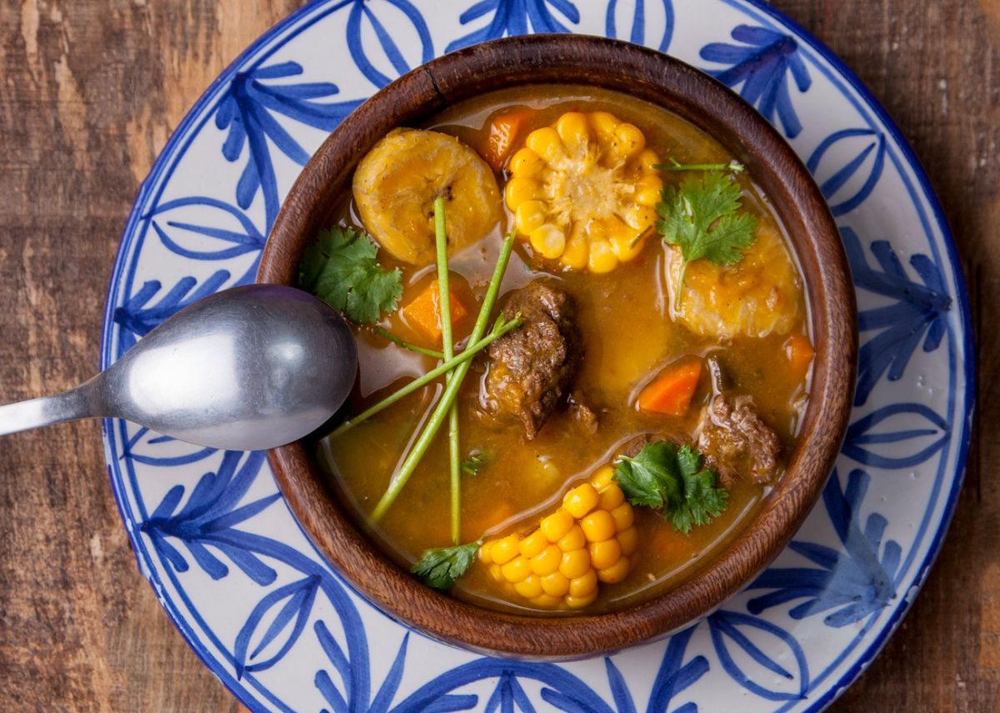
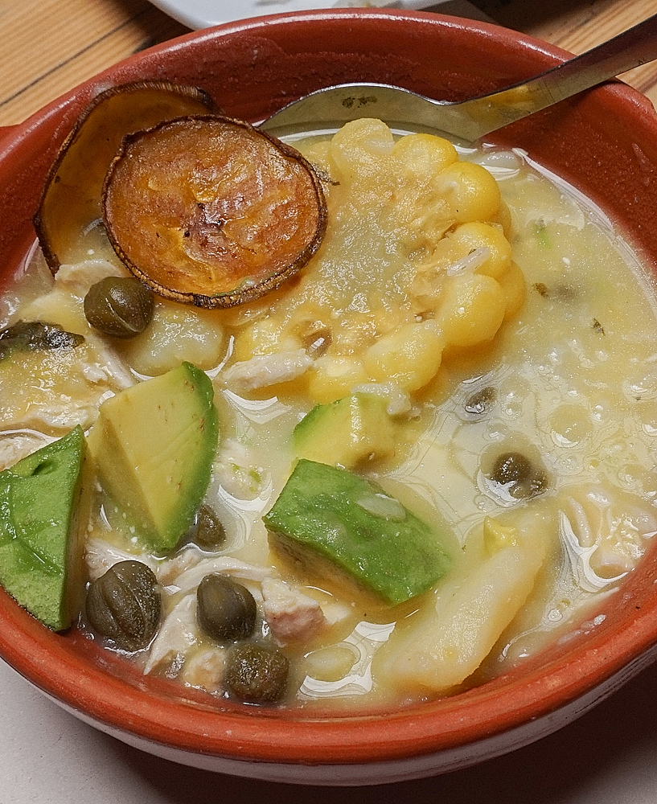
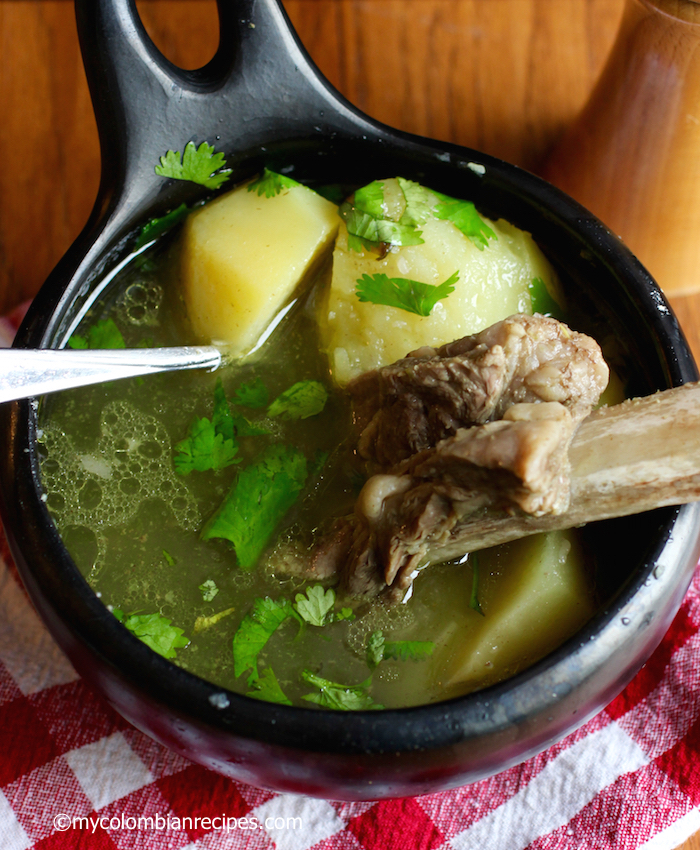

😕 Geen gerechten gevonden voor ""
🍲 Hoofdgerechten
De klassiekers van de Colombiaanse tafel Antioquia · Iconic
🔍 zoek
Antioquia · Iconic
🔍 zoek
Bandeja Paisa
Colombia's meest iconische bord: bonen, rijst, gehakt, chorizo, chicharrón, gebakken ei en avocado. Eén bord = één maaltijd voor twee.
 Bogotá · Soep
📍 Bogotá
🔍 zoek
Bogotá · Soep
📍 Bogotá
🔍 zoek
Ajiaco
Bogotá's handtekening: romige kippensoep met drie soorten aardappelen, guasca-kruid en kappertjes. Troostend en uniek.

🍲SancochoSancocho
Colombia's comfort food: stevige stoofsoep met vlees, yuca, maïs en plantain. Elke regio maakt een eigen versie. Onvermijdelijk.
 Huila · Grill
📍 Huila
🔍 zoek
Huila · Grill
📍 Huila
🔍 zoek
Asado Huilense
Varkensfilet gemarineerd in sinaasappelsap, laurier en tijm, traag gegrild. Typisch uit Huila — een van de beste grillgerechten van het land.
 Tolima · Feest
📍 Tolima
🔍 zoek
Tolima · Feest
📍 Tolima
🔍 zoek
Lechona
Heel spit-geroosterd varken gevuld met gekruide gele erwten. Klassiek bij feesten — een spektakel om te zien én te eten.

🫔TamalesTamales
Maïsmeel met kip of varken, gegaard in bananenblaad. Elk deel van Colombia heeft z'n eigen versie. Het klassieke ochtendgerecht.

🍽️Caldo de CostillaCaldo de Costilla
Stevige Andessoep van runderribben met aardappelen en bosui. Volgens Tony het ultieme anti-katereten.